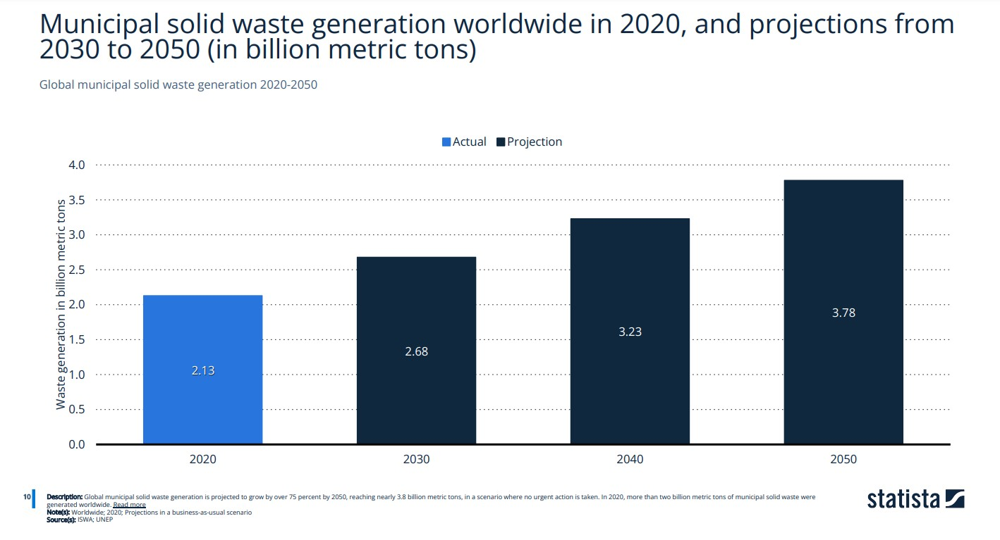
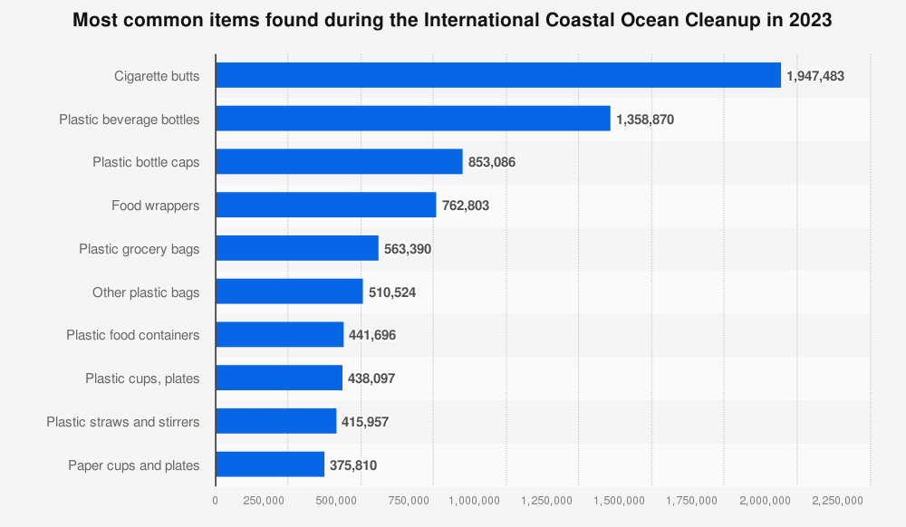
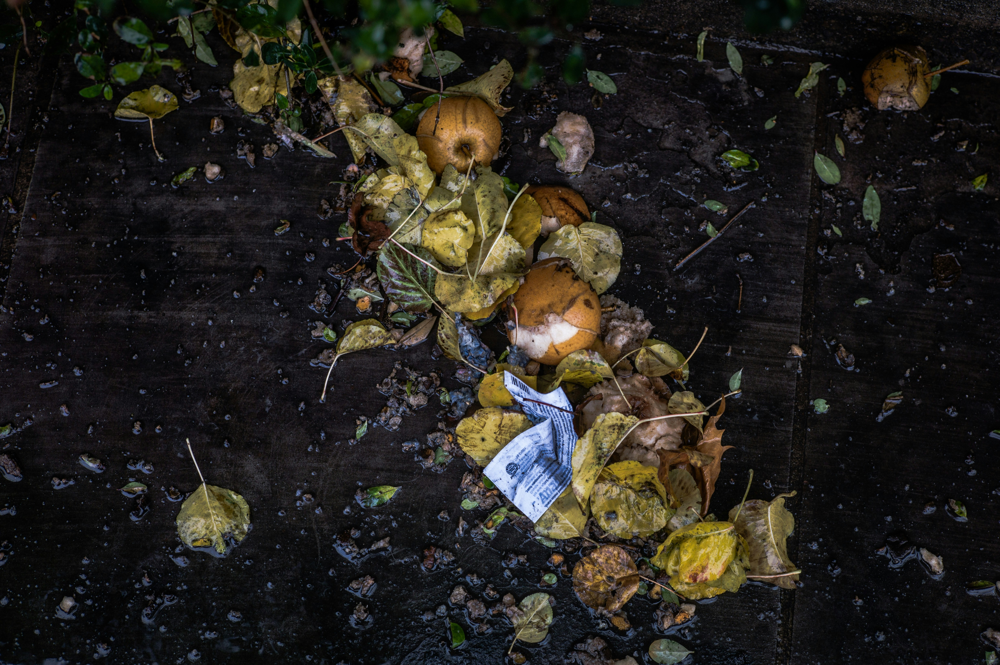
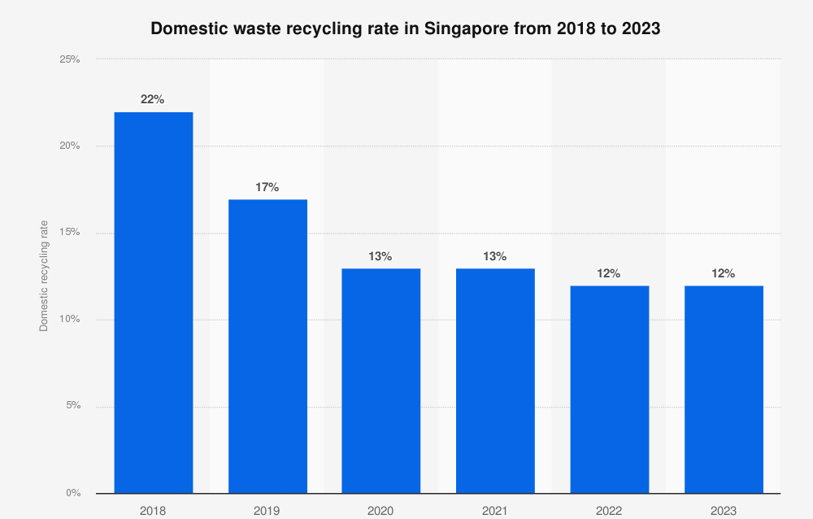

Small habits, big impact. Discover how your daily choices shape the planet’s future.
Explore Habits
The average person produces over 300kg of waste every year. In 2023, Singapore generated an average of 0.88 kilograms of domestic waste per person daily. It is projected that by 2050, we will produce about 2 times of the waste we produced in 2020, which amounts to about 3.6 billion tons. We need to take action! Every small step contributes to making a bigger difference. Lets protect Mother Earth. Zero-waste living is not about perfection, but about making better choices every day.
Over 8 million tons of plastic end up in the oceans annually. Plastic debris harms marine life, as animals can ingest or become entangled in it, leading to injury or death. Microplastics, which are tiny plastic particles, are now found in fish and even in the food we eat. Reducing plastic use and improving waste management are crucial steps to protect our oceans and marine ecosystems. Plastic pollution not only affects marine animals but also disrupts entire food chains and habitats. Floating plastics can transport invasive species to new environments, causing ecological imbalances. Additionally, toxic chemicals from plastics can accumulate in marine organisms, eventually making their way into human diets.


The wasteful culture of humans has led to many negative effects all around us, from global warming, to the annihilation of ecosystems. Remember that the actions we take will return back to us one day. Us humans are already indirectly consuming microplastics, landfills are overflowing, and our world is nearing the crisis of global warming.
Only about 9% of plastic waste is recycled worldwide. In Singapore, the domestic recycling rate has remained low in recent years, with only about 12% of household waste being recycled in 2023. Common challenges include contamination of recyclables and lack of awareness about proper recycling practices. By sorting waste correctly and reducing contamination, everyone can help improve recycling rates and contribute to a more sustainable future in Singapore.
